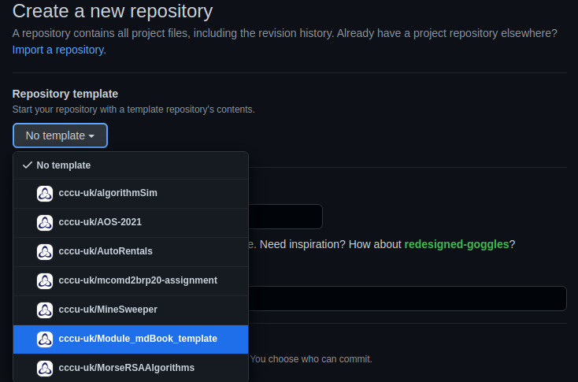
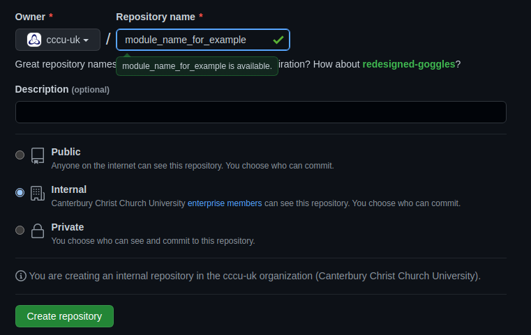
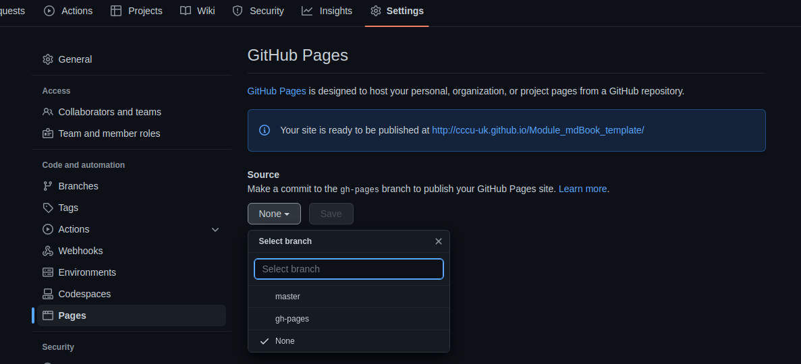
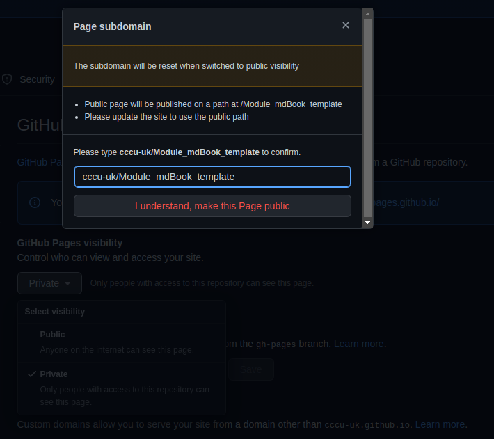

Github Setup
In order to get your mdBook to publish correctly you must follow this setup!
Step 1
This repo is to be used as the template, click this link to create a new repo at cccu-uk new repo for creating module mdBooks.
Selet from templates cccu-uk/Module_mdBook_template as seen below:

Next give your repo a name, best practice would be module code/name + exercies for example FCC_Exercices or PFL_Exercices. Don't forget to select internal option for only cccu member to access.

Step 2
Now you have a new repository navigate to the settings tab and select pages from the left hand menu as seen below and where the drop down box for source select gh-pages:

Once this has been done, select the Save button and set page to public for now and enter the name of your repo here, as seen below and click I understand...

Step 3
Now that you have set up the repo and github pages, feel free to edit the authors and title fields in the book.toml file, located in the parent directory for the repo.
[book]
authors = ["Contributor(s) name"]
title = "Templated mdBook"
language = "en"
multilingual = false
src = "content"
Step n...